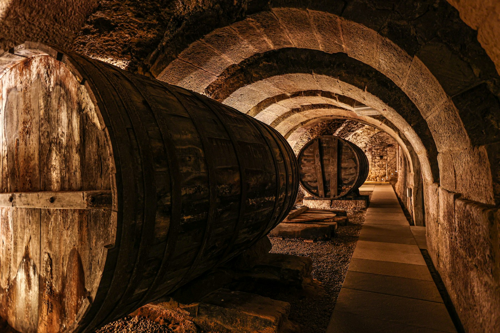
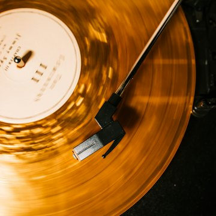
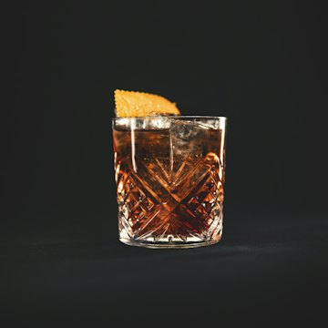
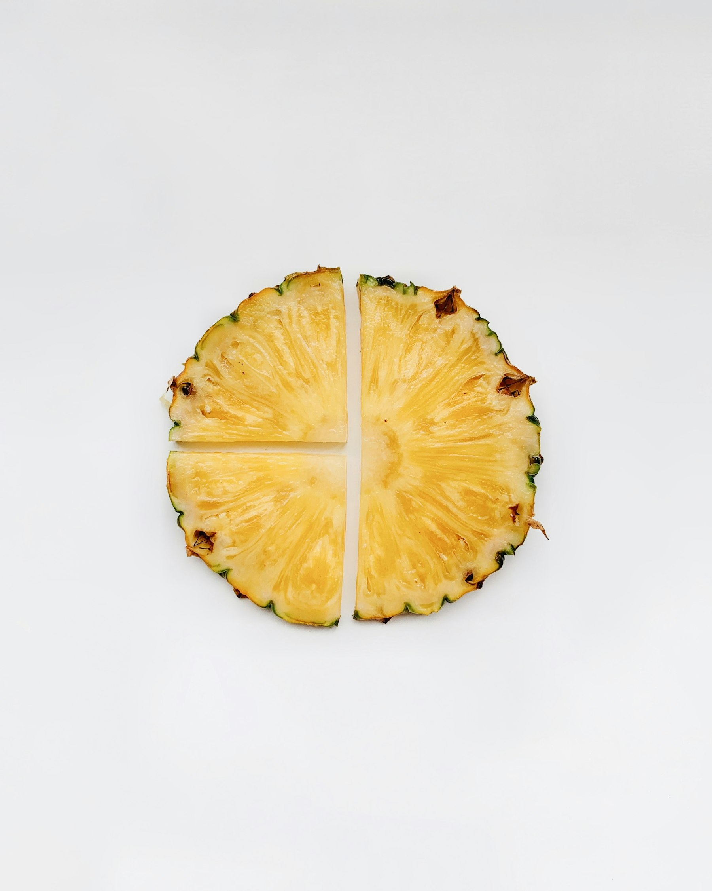
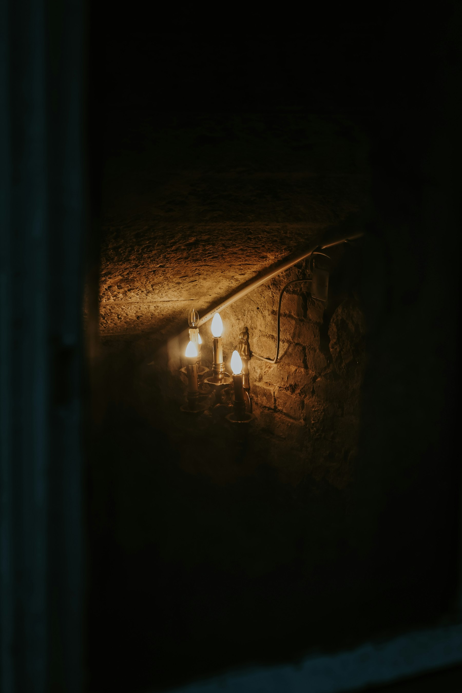
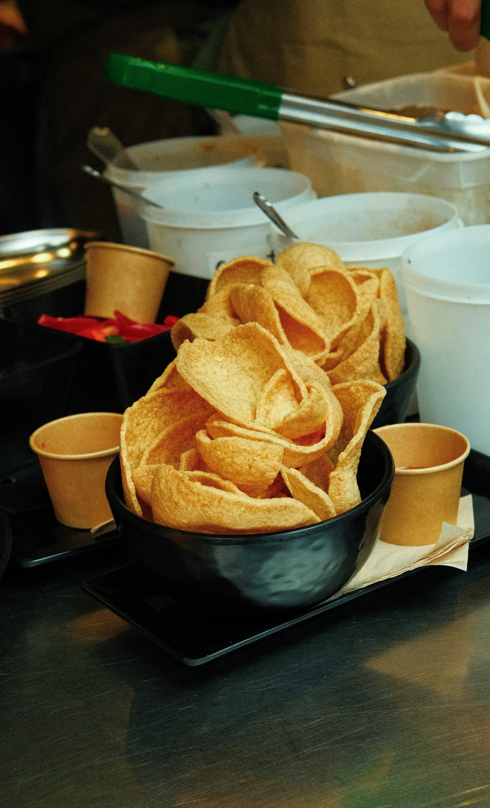

La Crypta
Cocktail bar sotto i portici di Rovereto. Ogni sera, dalle 18 alle 2.
Via Portici 16 · aperto ogni sera 18–02

Sotto i portici si scende: la pietra ,
la luce bassa ,
un disco che gira  
Portici
[Descrizione]:
Secco, freddo e dritto come la fila di archi qui sopra. La genziana scende dalle montagne di Rovereto e lascia un amaro pulito, che chiede subito un altro sorso.
[Ingredienti]:
- - 60 ml gin
- - 10 ml vermouth dry
- - 5 ml liquore di genziana
- - olio di scorza di limone
Le firme
Il gin più asciutto della carta, servito ghiacciato in coppa.
La carta
I classici
8 drinkNegroni8
Gin, bitter, vermouth rosso. Il più chiesto al bancone, da anni.
Manhattan9
Rye, vermouth rosso, angostura, amarena. Mescolato, mai shakerato.
Martini9
Gin o vodka, vermouth dry. Oliva o scorza: lo decidi tu.
Cosmopolitan8
Vodka al limone, triple sec, mirtillo rosso, lime.
Old Fashioned9
Bourbon, zucchero, bitter, scorza d'arancia su un solo cubo di ghiaccio.
White Russian8
Vodka, liquore al caffè, panna fresca appena montata.
Americano7
Bitter, vermouth rosso, soda. Per cominciare piano.
Gin Tonic8
Gin a scelta dallo scaffale, tonica secca, la sua botanica.
Le firme
5 drinkPortici10
Gin, vermouth dry, genziana, olio di limone.
Velluto di volta10
Vodka, amarena, lime, cordiale al lampone, lavanda.
Lume10
Bourbon, miele di castagno, bitter all'arancia.
Marzemino sbagliato10
Bitter, vermouth rosso, Marzemino frizzante della Vallagarina.
Ultima discesa10
Vodka, caffè, panna, noce moscata. L'ultimo giro.
Da bere piano
6 vociMarzemino5
Il rosso della Vallagarina, al calice.
Teroldego Rotaliano5
Rosso trentino, scuro e succoso, al calice.
Trentodoc7
Metodo classico di montagna, al calice.
Birra alla spina5
Chiara, media, fredda come la pietra.
Amari e distillati5–9
Dallo scaffale dietro al bancone: chiedi, si racconta.
Analcolico6
Agrumi, ananas fresco, tonica. Inventato al momento.
Con ogni bicchiere, sempre: patatine e ananas fresco.
La notte
dalle 18 alle 2- Soulil primo disco
- Discoverso mezzanotte
- 18–02ogni sera
- Pietrale pareti

- Housefino alla chiusura

- la volta
- Ananasfresco, a ogni giro

Un tavolo, stasera?
Per gruppi e tavoli si chiama: al bancone c'è sempre qualcuno, ogni sera dalle 18. Altrimenti scendi e basta.